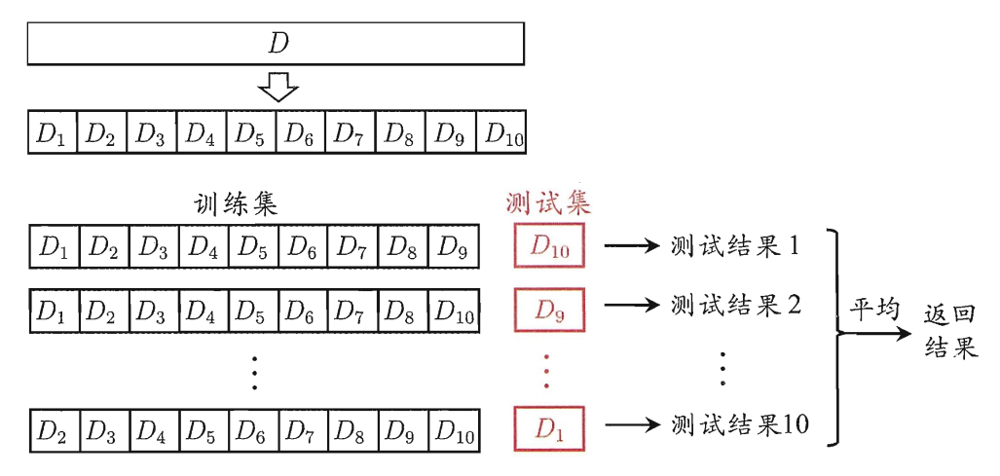

西瓜书模型评估与选择
此为西瓜书的第二章。
经验误差与过拟合
error(误差)：学习器的实际预测输出与样本的真实输出之间的差值
- training error(训练误差)：在训练集上的误差
- empirical error(泛化误差)：在测试集的误差👍（我们更看重的是泛化误差）
overfitting(过拟合)：学习能力过强时，会将在广样本中不具备的一些特质作为训练样本训练出的东西，这些在更广的测试集中不适用，导致泛化能力下降。过拟合问题不可避免（P≠NP）
underfitting(欠拟合)
评估方法
通常为了在几种模型中选择出我们期待的最好的模型，我们需要测试模型的泛化能力，一般使用测试集的数据。为了能更公证地比较，测试集的数据需要独立同分布地采样，同时尽量避免出现在训练集中，有以下方法可以使用：
留出法(hold-out)
将数据集D划分为两个互斥的集合，一个作为训练集S，一个作为测试集T。需要注意：
- 训练/测试集的划分要尽可能保持数据分布的一致性。即如果S中正样本占50%，则T中也要使正样本比例接近50%
- 若S中包含大多的样本，则测试集的数据过少（甚至只有一个的话）那测出来的数据极不稳定；反之若T中样本过多也是同样的道理，会导致学习的模型不够完善。目前这个问题没有解决办法，一般的方式是2/3~4/5的样本用于训练
交叉验证法(cross validation)
“p次k折交叉验证”指的是对于样本集，我们使用p中不同的划分方式，每次将样本集划分为数量相等的k份，然后每次用k-1份作为训练集训练，剩下的一份作为测试集，这样下来总过求p×k次的平均值作为结果来判断。如下图所示：
注意图中只展示了一次划分。特殊的，当k和样本的数量一致时，交叉验证法退化为留一法(Leave-One-Out)，LOO方法在数据较多时计算量过大。
自助法(bootstrapping)
前面的方法在训练时因为需要拿出一部分作为测试集，因此训练样本的规模和全部样本的规模不一样，这里会产生偏差。这里的“自助法”以自助采样法(bootstrap sampling)为基础。
在数据集D中，有m个样本，现在我们想要用构造一个同样为m个样本的数据集D’，方式就是每次随机地从D中抽取一个样本放入D’中，放入后将这个样本放回去以保证下次依旧有机会再抽到。最后我们使用D’来做训练，而测试集是D-D’（即D中没有在D’中出现过的）。这里估计一下这个测试集大概的大小，即样本在m次采样中始终不被采到的概率:
$$
\lim_{ m\to \infty } (1-\frac 1m)^{ m } = \frac 1e \approx 0.368
$$
自助法在数据集较小、难以有效划分训练/测试集时很有用，对集成学习[1]等有很大的好处，但是其产生的数据集改变了初始数据集的分布，会引入估计偏差。
调参与最终模型
调参比较苦💔，这里还提到一般我们在实际结果中的测试数据称为测试集，把训练数据划分为训练集和验证集（validation set）
性能度量
错误率与精度
查准率、查全率与F1
ROC与AUC
代价敏感错误率与代价曲线
比较检验
偏差与方差
习题
后续扩展
[1] 集成学习